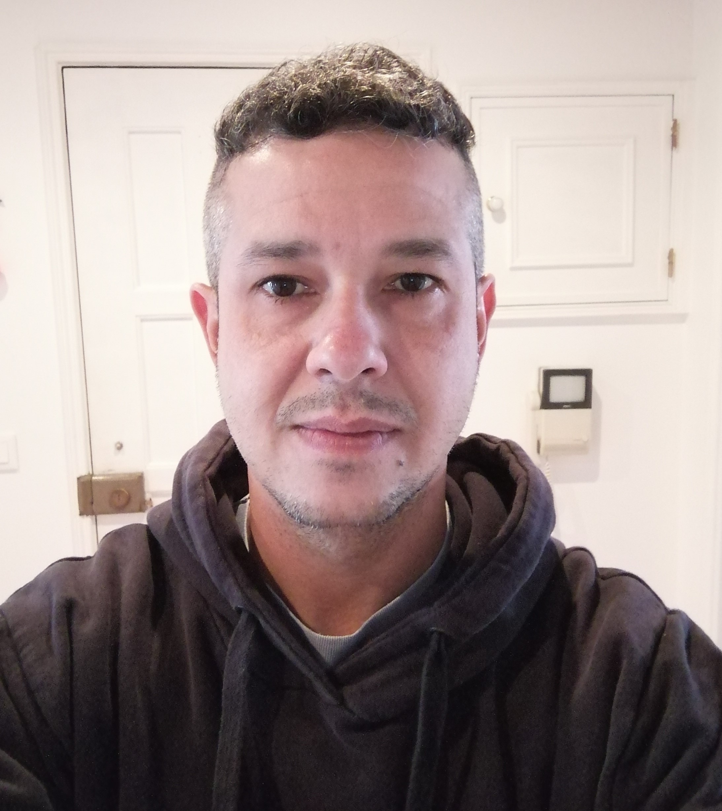

Rodrigo Pio Cavaloti
Portugal, Lisboa, Cascais, Alcabideche
rodrigocavaloti@gmail.com
+351960199142
Perfil Profissional
- Atualmente cursando Técnico de Informática de 12 meses no IEFP de Alcoitão, com sólida formação teórica e prática em diversas áreas da tecnologia da informação. Durante o estágio, tenho a oportunidade de aplicar os conhecimentos adquiridos em aula em situações reais de trabalho, contribuindo para o desenvolvimento e manutenção de sistemas de TI.
Principais Responsabilidades
- Suporte Técnico: Prestação de suporte técnico a usuários, resolução de problemas relacionados a hardware, software, redes e sistemas operacionais.
- Manutenção de Equipamentos: Instalação, configuração e manutenção de computadores, impressoras e outros periféricos, garantindo o bom funcionamento dos equipamentos.
- Segurança da Informação: Participação na implementação de políticas de segurança, monitoramento de ameaças e defesa contra ataques cibernéticos.
- Desenvolvimento de Software: Colaboração em projetos de desenvolvimento de software, incluindo programação, testes e documentação.
- Administração de Redes: Configuração e manutenção de redes locais, assegurando a conectividade e a segurança dos dados.
Competências Adquiridas
- Conhecimento em sistemas operacionais (Windows, Linux).
- Habilidade em linguagens de programação (HTML/CSS, JAVA, C++).
- Experiência com ferramentas de produtividade (Microsoft Office, antivírus).
- Capacidade de trabalhar em equipe e resolver problemas de forma eficiente.
- Boa comunicação e atendimento ao cliente.
Objetivo
- Desenvolver habilidades técnicas e profissionais na área de TI, contribuindo para o sucesso da organização e buscando sempre a melhoria contínua e a inovação tecnológica.
Educação e Formação
- 12ºAno (completo) Liceu de São João do Estoril.
- Ensino Universitário - 4 anos Centro Universitário das Faculdades Metropolitanas Unidas (FMU). Curso de Comunicação Social - Marketing e Publicidade.
- Curso Técnico - 12 meses (com certificação) Centro de Formação e de Reabilitação Profissional (IEFP). Comunicação, Marketing, Relações Publicas e Publicidade, Nível 4:
- Análise de marketing na empresa e no mercado.
- Redes Sociais.
- Multimédia (imagem, áudio e vídeo) Design Gráfico.
- Ferramentas: Pacote Office, Adobe Photoshop, Premiere Pro, Ilustrator, In Design, Vegas, Canva, Instagram, Twitter, Youtube.
- Curso Técnico - 12 meses (com certificação) Centro de Formação e de Reabilitação Profissional (IEFP). Técnico de Informática - Sistemas - Nível 4.
- Instala e configura sistemas operativos.
- Instala e configura utilitários sobre sistemas operativos.
- Executa os procedimentos necessários para administrar uma rede local.
- Define e implementa um plano de instalação de um sistema de base de dados.
- Procede à gestão e instalação de base de dados.
- Planeia, instala e gere um servidor intranet e Internet em ambiente Web.
- Elabora páginas para a Web, com recurso a hipertexto.
Linguística
- Inglês - Básico.
- Espanhol - Básico.
Experiência Profissional Brasil
Em ordem crescente.
- Empresa: Geosestudos
- Cargo: Designer Gráfico em Autocad
- Atividade: Designer de software de B.I. Planeamento Orçamentário. Desenvolvendo telas de "front page" para o software necessário de acordo com resolução de telas em vários formatos, construção de ícones. vetorização de logotipos entre outros.
Experiência Profissional Portugal
Em ordem crescente.
- Empresa: Bright Sky Solutions - Tecnologias de Informação- Lisboa
- Cargo: Suporte de TI aos utilizadores internos.
- Atividade: Atender aos utilizadores no uso das plataformas Windows 10, WS-Office, Outlook, Contas de E-mail, Uso da Internet com Google/IE, Teams e aplicações de uso no escritório da empresa; Efetuar instalações e configurações das ferramentas Windows, atualização de versões do Windows e das ferramentas; Efetuar apresentações em PowerPoint, documentos em Excel e Word, responder aos e-mails, entre diversos outros trabalhos administrativos com o uso das ferramentas Windows; Atendimento remoto aos colaboradores para a configuração dos portáteis e ferramentas Windows, reinstalações, trocas de versão, atualizações.
- Empresa: Football Kids Fair Play - Lisboa
- Cargo: Estágio Profissional
- Atividade: Edição de vídeos, fotos, imagens, logotipos e preçário. Atualização de redes sociais e presença na montagem e construção de eventos. Ferramentas utilizadas - Adobe Photoshop, In Design, Ilustrator, Premiere Pro, Vegas, Instagram, Youtube.
- Empresa: YourVoice - Lisboa
- Cargo: Telemarketing B2B e B2C
- Atividade: Formação profissional e continua em trabalho de telemarketing realizado no software Altitude, onde realizava a venda do serviço da "Medicare" plano de saúde para maiores de 18 anos e com mais de 6 meses de residência em Portugal. Ferramentas utilizadas - Windows, Office e Software Altitude.